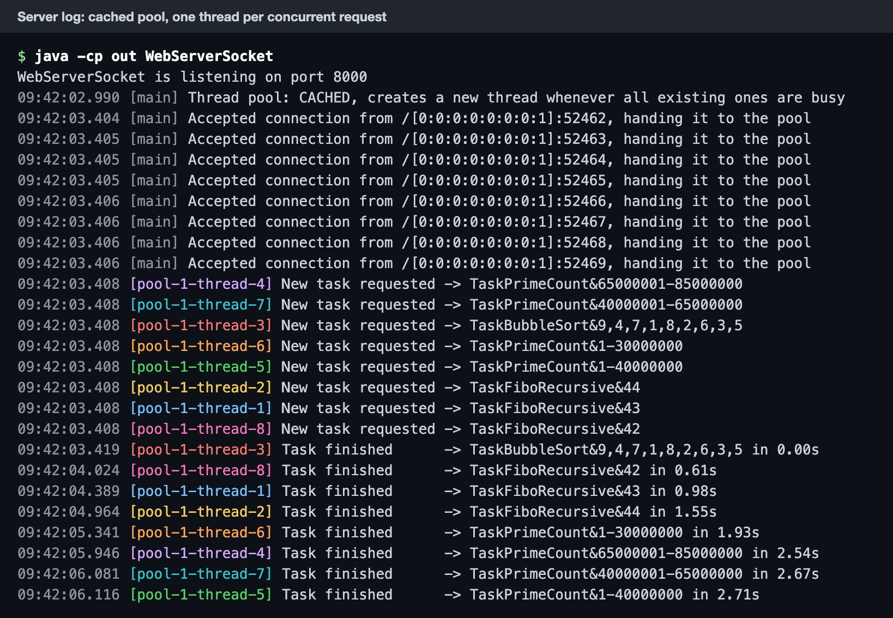
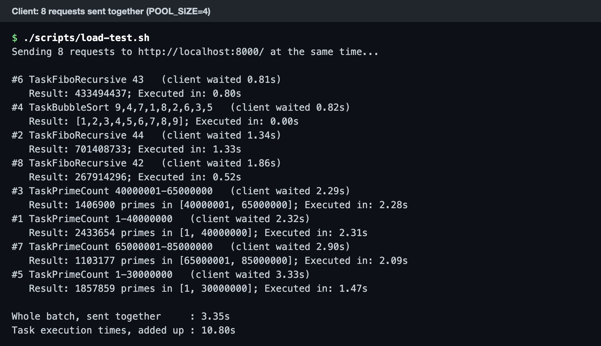
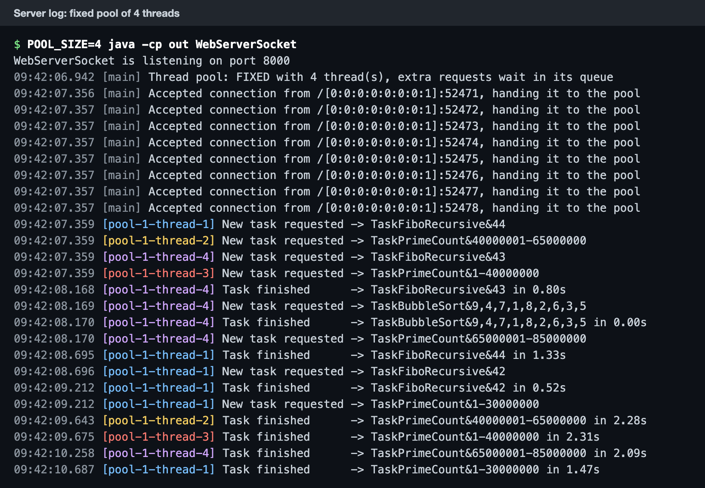
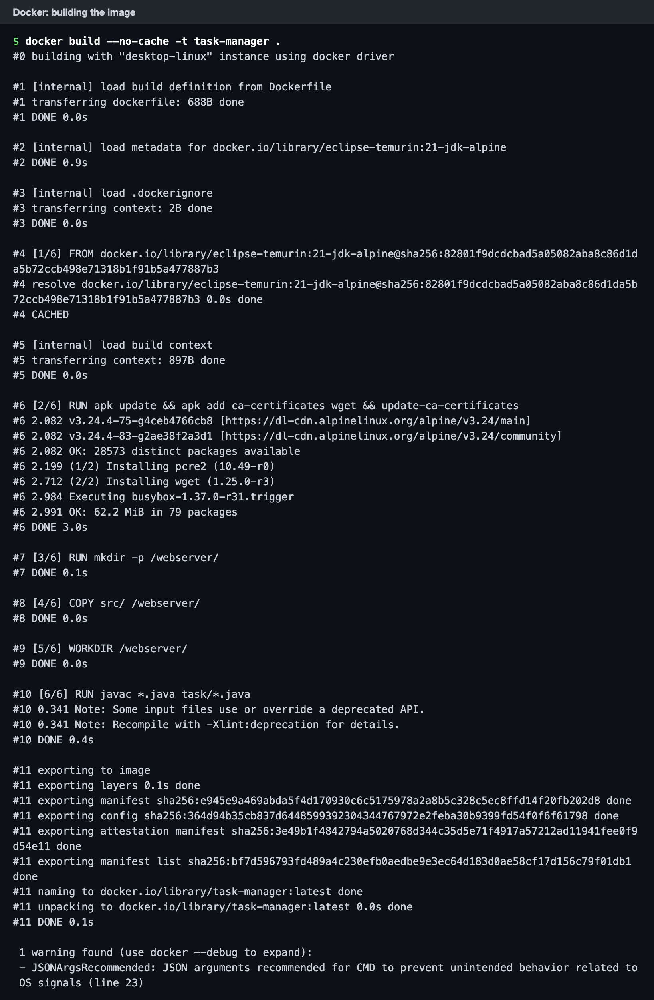
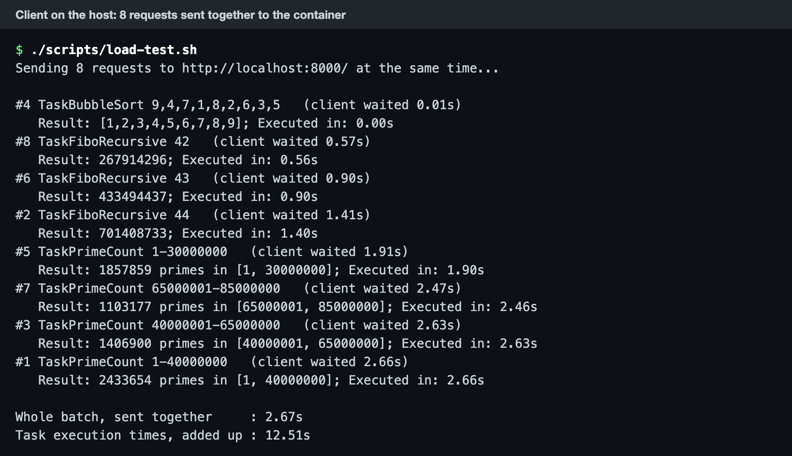

Parallel Programming
Architecture case study, and extending, load-testing and dockerizing a multi-threaded task server
I chose three of the four scenarios: the AI agent tool-calling engine, the security scanner and distributed log analyser, and the automated online judge. Together they cover the three kinds of load a thread pool has to carry: work that mostly waits on the network, work that mixes network and CPU, and work that is pure CPU and sensitive to timing. For each system I answer the four challenges from the point of view of its architect.
The three systems share one shape. Work arrives as many small, independent tasks, it arrives in bursts, and
nobody knows in advance how long a task will take. That is exactly the situation the executor framework is built
for: tasks are submitted to an ExecutorService, a limited set of threads runs them, and each
submission returns a Future that stands for the result.
In every step of a conversation the language model may ask for several tools at once: a web search, a database query, running a script. The engine runs those calls and returns their results to the model. A tool call spends most of its time waiting for a network reply, and its duration is unpredictable.
The engine owns one pool, Executors.newFixedThreadPool(32). The number is larger than the number
of cores because the threads mostly wait, and it is capped by what the services behind the tools can take (the
database connection pool, the rate limit of the search provider).
How it collapses without the pool. Suppose a new feature brings 2,000 conversations at the same moment
and the model asks for 5 tools in each. With new Thread() per call the engine creates 10,000 threads
within one second. Each reserves its own stack (about 1 MB by default) and opens its own connection. The search
provider answers almost every call with HTTP 429, the database refuses new connections, the CPU spends its time
switching between threads, and in the end the JVM dies with
OutOfMemoryError: unable to create native thread. Every conversation stops, including the ones that
needed a single cheap tool. With the fixed pool only 32 calls run and the rest wait in the pool's queue, so a burst
makes answers slower instead of bringing the service down. Creating a thread is also expensive compared with a
short tool call, and the pool pays that cost only 32 times.
Design remark: the queue of newFixedThreadPool is unbounded, so in production I
would monitor its length, or build the pool with a bounded queue and a rejection policy.
Every tool call is a Callable<ToolResult>, because the model needs the tool's output.
submit returns a Future<ToolResult>, and the engine never waits on it without a
limit:
Future<ToolResult> future = toolPool.submit(() -> webSearch.run(query)); // Callable<ToolResult> try { return future.get(10, TimeUnit.SECONDS); } catch (TimeoutException e) { future.cancel(true); // interrupt the stuck call and free its thread return ToolResult.error("web_search timed out after 10 s"); }
A plain future.get() would wait forever on a server that accepted the connection and never
answered: the user would watch a spinner and one pool thread would be lost for good. With the timeout the model
receives an ordinary result that says "timed out" and can go on, try another tool, or tell the user.
invokeAll(): when the model asks for several tools in one step (weather, calendar and
flights for the same question), it cannot continue until it has a result for every call. That is the
"wait for all" case. I use the timed form so that one slow tool cannot hold the whole step; calls that are not
finished when the time is up are cancelled.invokeAny(): when the same question is sent to three interchangeable search providers,
one answer is enough. invokeAny returns the first call that finishes successfully and
cancels the others, and a provider that fails is simply ignored as long as another one succeeds.// every tool call of one model step: wait for all of them, 15 s at most List<Future<ToolResult>> results = toolPool.invokeAll(toolCalls, 15, TimeUnit.SECONDS); // the same query to three providers: the first successful answer wins, the rest are cancelled ToolResult fastest = toolPool.invokeAny(Arrays.asList( () -> providerA.search(query), () -> providerB.search(query), () -> providerC.search(query)));
An exception thrown inside a tool does not kill the pool thread and does not reach the caller by itself. The
pool stores it in the Future, and get() rethrows it wrapped in an
ExecutionException whose getCause() is the original exception. The engine turns it into
an error result for the model, so one failing tool never affects the other tools. The futures must always be read,
because an exception that nobody asks for is lost silently.
for (Future<ToolResult> f : results) {
try {
answers.add(f.get());
} catch (ExecutionException e) { // the tool itself threw
answers.add(ToolResult.error("tool failed: " + e.getCause().getMessage()));
} catch (CancellationException e) { // it did not finish inside the 15 s
answers.add(ToolResult.error("tool timed out"));
}
}
Emergency stop. When the user presses "Stop", the engine calls cancel(true) on every call
the conversation still has running. A call that has not started will never run, and a running one has its thread
interrupted. The tool has to cooperate: blocking operations such as waitFor() or
sleep() throw InterruptedException, the tool releases what it holds in
finally, and it sets the interrupt flag again so the pool can see it.
for (Future<ToolResult> f : runningCalls) f.cancel(true); // the "Stop" button public ToolResult call() throws Exception { // a tool that runs a script Process process = new ProcessBuilder("python3", script).start(); try { process.waitFor(); // cancel(true): InterruptedException here return ToolResult.ok(readOutput(process)); } catch (InterruptedException e) { Thread.currentThread().interrupt(); // keep the interrupt flag set throw e; } finally { process.destroyForcibly(); // the child process never outlives the task } }
The system probes thousands of hosts and ports for weaknesses, and it analyses log files collected from many servers (one file per server and day, a "shard") to find traces of an attack.
Two pools, because the two kinds of work behave differently: newFixedThreadPool(64) for network
probes, which mostly wait, and newFixedThreadPool(availableProcessors()) for parsing logs, which is
CPU work and gains nothing from more threads than cores.
How it collapses without the pool. Scanning one /16 network means 65,536 addresses. A thread per address
opens 65,536 sockets at once: the process hits the operating system's limit on open files
(Too many open files) and on threads, and before it crashes it floods the network it is supposed to
protect, so the firewall blocks the scanner as if it were the attacker. Here the pool size is also a speed limit:
64 threads means at most 64 probes in flight.
Scanning one host is a Callable<HostReport> (open ports and findings), and analysing one
shard is a Callable<ShardStats>. A host behind a firewall often does not refuse the connection,
it just stays silent, so a probe can hang for minutes. With future.get(5, TimeUnit.SECONDS) a silent
host costs five seconds; it is recorded as unreachable and the scan moves on.
Future<HostReport> future = probePool.submit(new HostScan(host)); // Callable<HostReport> try { report.add(future.get(5, TimeUnit.SECONDS)); } catch (TimeoutException e) { future.cancel(true); report.markUnreachable(host); // go on with the next host }
invokeAll(): the nightly report counts failed logins across all servers. A total that
misses one shard is wrong, so the report waits for all of them:
parsePool.invokeAll(shardTasks), then the partial results are merged.invokeAny(): during an incident the analyst asks "does this malicious address appear
anywhere?". The logs are stored on three replicas, and any replica that finds the address is enough:
probePool.invokeAny(replicaLookups). One detail matters: invokeAny takes the first task
that completes without an exception, so a lookup that finds nothing must throw instead of returning
null. Otherwise a quick "not found" would win the race.A damaged log file makes its task throw. The exception arrives as an ExecutionException when the
result is read; the shard is marked as failed in the report and the other 39,999 files are still processed.
try {
total.merge(f.get());
} catch (ExecutionException e) {
report.markFailed(shard, e.getCause()); // damaged file: record it and keep going
}
Emergency stop. If the scan is slowing a production server down, or the operator entered the wrong
network, there is a kill switch. shutdownNow() interrupts every running scan and empties the queue,
and awaitTermination gives the scans a few seconds to finish cleaning up. Ordinary blocking socket
I/O does not react to an interrupt, so every probe sets its own connect timeout and checks the interrupt flag
between steps; try-with-resources closes the socket on every path.
void emergencyStop() throws InterruptedException {
List<Runnable> neverStarted = probePool.shutdownNow(); // interrupt scans, empty the queue
if (!probePool.awaitTermination(10, TimeUnit.SECONDS)) {
log("some scans did not stop in time");
}
}
try (Socket socket = new Socket()) { // inside HostScan.call()
socket.connect(new InetSocketAddress(host, port), 2000); // blocking I/O ignores interrupts
if (Thread.currentThread().isInterrupted()) throw new InterruptedException();
// ... probe the service ...
}
The judge receives program submissions, compiles them, runs each one on a set of test cases inside a sandbox process, and answers with a verdict: Accepted, Wrong Answer, Time Limit Exceeded or Runtime Error.
The work is pure CPU, and the verdict depends on measured running time, so the pool has as many threads as the
machine has cores: Executors.newFixedThreadPool(Runtime.getRuntime().availableProcessors()).
How it collapses without the pool. In the last minute of a contest 500 submissions arrive together. A thread per submission starts 500 sandbox processes on 8 cores. Every program now runs about sixty times slower than it should, so correct solutions are reported as "Time Limit Exceeded"; memory runs out and the operating system starts killing sandboxes, and possibly the judge. The results are wrong before the system even crashes. With the fixed pool 8 submissions are judged at a time and the others wait in the queue as "Pending". In this system the pool protects the correctness of the results, not only the stability of the server.
Running one test case is a Callable<Verdict>. A submission may contain an infinite loop.
Without a limit, eight such submissions would occupy all eight threads forever and the judge would stop serving
everyone. The limit on get is the time limit of the test plus a small margin:
Future<Verdict> future = judgePool.submit(new RunTestCase(submission, test)); // Callable<Verdict> try { return future.get(test.timeLimitMs() + 500, TimeUnit.MILLISECONDS); } catch (TimeoutException e) { future.cancel(true); // interrupts the task; it kills the sandbox return Verdict.TIME_LIMIT_EXCEEDED; } catch (ExecutionException e) { return Verdict.JUDGE_ERROR; // our failure, not the contestant's }
invokeAll(): the final score is the number of test cases passed, so every verdict is
needed before the score can be computed: judgePool.invokeAll(testCaseTasks).invokeAny(): in the "hack" phase the judge tries to break an accepted solution. Several
tasks generate random inputs in parallel and compare the solution with a reference answer. A task succeeds only
when it finds an input on which the two differ, so judgePool.invokeAny(randomTestSearches) returns
the first counter-example and cancels the remaining searches.The important decision is what counts as an error. A submitted program that crashes is a normal
result: the task returns RUNTIME_ERROR. An ExecutionException means the judge's
own task failed (the sandbox did not start, a test file is missing, the disk is full). The contestant must not be
punished for that, so the verdict is "Judge Error", the submission is queued again and an administrator is
alerted.
Emergency stop. For a malicious submission, or when an administrator halts judging,
cancel(true) interrupts the thread that is waiting in waitFor(). The
finally block kills the sandbox process and deletes its working directory, whatever the reason for
leaving.
public Verdict call() throws Exception { // RunTestCase
Process sandbox = startSandbox(submission, test);
try {
int exitCode = sandbox.waitFor(); // InterruptedException on cancel(true)
if (exitCode != 0) return Verdict.RUNTIME_ERROR; // the program's failure is a result
return outputMatches(sandbox, test) ? Verdict.ACCEPTED : Verdict.WRONG_ANSWER;
} catch (InterruptedException e) {
Thread.currentThread().interrupt();
throw e;
} finally {
sandbox.destroyForcibly(); // also ends infinite loops and fork bombs
deleteWorkDir();
}
}
| Tool-calling engine | Security scanner / logs | Online judge | |
|---|---|---|---|
| Pool size | 32, above the core count: threads wait on the network | 64 for probes, one per core for parsing | One per core: timing must stay fair |
| Without a pool | 10,000 threads and connections, out of memory | Too many open files; the scanner floods the network | False "Time Limit Exceeded", then out of memory |
Callable result |
ToolResult |
HostReport, ShardStats |
Verdict |
get(timeout) |
A tool that never answers | A host that stays silent | A program that never ends |
invokeAll() |
All tool calls of one model step | All shards of the nightly report | All test cases of the final score |
invokeAny() |
First of three search providers | First replica that finds the indicator | First input that breaks a solution |
| Emergency stop | "Stop" button: cancel(true) |
Kill switch: shutdownNow() |
Halt judging: cancel(true), kill the sandbox |
I cloned the reference project
(github.com/wagnerjfr/web-http-socket-server-task-manager-docker) into the folder
task-manager/ of my repository, keeping its history. It has no build tool; it is plain Java compiled
with javac:
task-manager/ ├── Dockerfile ├── src/ │ ├── WebServerSocket.java server built on ServerSocket (the default one) │ ├── WebServerHttp.java the same server built on the JDK's HttpServer │ ├── handler/ RequestsHandlerSocket.java, RequestsHandlerHttp.java │ ├── singleton/TaskExecutor.java creates and runs a task from "TaskName&input" │ ├── singleton/TasksList.java history of executed tasks, shared by all threads │ ├── task/ Task, TaskImpl, TaskFiboRecursive, TaskBubbleSort, ... │ ├── task/TaskPrimeCount.java NEW: my task │ └── util/ NEW: Log.java, PoolFactory.java ├── test/ NEW: TaskPrimeCountTest.java, ServerTest.java └── scripts/ NEW: run-tests.sh, load-test.sh
WebServerSocket.The main thread only accepts. WebServerSocket.main opens a ServerSocket on
port 8000 and loops on accept(), which blocks until a client connects and then returns a
Socket for that one client. The main thread does not read the request. It wraps the socket in a
RequestsHandlerSocket and gives it to the pool with submit, then returns to
accept() immediately, so a slow task never stops the server from accepting the next client.
try (ServerSocket serverSocket = new ServerSocket(PORT)) { // listen on port 8000
executorService = PoolFactory.fromEnvironment(); // the thread pool
while (running) {
Socket socket = serverSocket.accept(); // main blocks here
Log.info("Accepted connection from " + socket.getRemoteSocketAddress() + ", ...");
RequestsHandlerSocket handler = new RequestsHandlerSocket(socket); // a Runnable
executorService.submit(handler); // runs on a pool thread
}
}
A pool thread does the work. RequestsHandlerSocket implements Runnable. Its
run() reads the first line of the HTTP request from the socket. For GET it returns the
list of executed tasks. For POST it passes the body, which has the form
TaskName&input, to TaskExecutor.run(). That method builds the task object by name
through reflection, calls execute(), measures the time, stores the task in TasksList
and returns the result text. The same pool thread then writes the response and closes the socket.
task = (Task) Class.forName("task." + className).newInstance(); // TaskExecutor.createTask()
Runnable or Callable? The handler is a Runnable: it returns nothing, because it delivers
its result itself by writing to the socket. This is the right choice here. If it were a
Callable<String>, the main thread would have to call future.get() to send the
answer, and that would block the accept loop. One consequence is that submit still returns a
Future and the server ignores it, so a runtime exception inside a handler is stored in that
Future and never shown. This is the "lost exception" I described under errors in Question 1.
The second server, WebServerHttp, does the same with a library class: HttpServer
accepts the connections itself and server.setExecutor(pool) tells it which pool runs the handlers.
The original pool in both servers is Executors.newCachedThreadPool(), which has no upper limit: it
starts a new thread whenever all existing ones are busy and reuses threads that have become idle.
openjdk:8-jdk-alpine no longer
exists on Docker Hub.curl rejected the answers of WebServerSocket with
Received HTTP/0.9 when not allowed, because the server wrote the result text with no HTTP status
line or headers.TasksList. All pool threads add to one shared ArrayList
with no synchronization. In my test, 8 threads adding 40,000 tasks left only 7,275 in the list.TaskBitcoin returns an exception because the external price service changed its response
format. I left it as it is and did not use it in the tests.TaskPrimeCountThe task counts the prime numbers in a range. Its input is either N (the range from 1 to N) or
FROM-TO. I chose it because it is pure CPU work whose duration grows with the range: a few requests
sent together run long enough to see them overlap, and the answers are easy to check against known values (there
are 664,579 primes up to ten million). The check is deliberately simple trial division.
public class TaskPrimeCount extends TaskImpl {
public static final int MAX_NUMBER = 100_000_000; // largest number accepted
@Override
public void execute() {
try {
int[] range = parseRange(input); // "N" or "FROM-TO"; rejects bad input
int count = countPrimes(range[0], range[1]);
result = count + " primes in [" + range[0] + ", " + range[1] + "]";
} catch (IllegalArgumentException e) {
result = "Exception: " + e.getMessage(); // same convention as the other tasks
}
}
private static boolean isPrime(int n) {
if (n < 2) return false;
if (n < 4) return true; // 2 and 3
if (n % 2 == 0 || n % 3 == 0) return false;
for (int i = 5; i * i <= n; i += 6) { // primes above 3 are 6k-1 or 6k+1
if (n % i == 0 || n % (i + 2) == 0) return false;
}
return true;
}
}
Integration with the server. The server has no list of task names to edit. It finds a task through
Class.forName("task." + name), so a class becomes a known task when it is in the package
task and implements Task (I extend TaskImpl like the existing tasks). The
Dockerfile compiles task/*.java, so the class is also part of the image without further changes. A
client asks for it with curl -d TaskPrimeCount -d 1-10000000 http://localhost:8000/; curl joins the
two -d values into the body TaskPrimeCount&1-10000000.
I wrote the tests before the code. TaskPrimeCountTest has 18 checks (known counts, range edges,
invalid input, and a call through TaskExecutor exactly as the server makes it), and
ServerTest has 11 checks for the other changes below. All 29 pass with
./scripts/run-tests.sh.
| File | Change and reason |
|---|---|
util/Log.java (new) |
Every log line starts with the time and the name of the thread that wrote it. Without the thread name the log cannot show how the pool distributed the tasks. |
util/PoolFactory.java (new) |
Chooses the pool from the environment variable POOL_SIZE: a positive number gives
newFixedThreadPool(n), otherwise the original cached pool. This let me compare the pool types
from Question 1 on the same server. |
WebServerSocket.java, WebServerHttp.java |
Use PoolFactory; the socket server logs each accepted connection from the main thread. |
handler/RequestsHandlerSocket.java |
Sends a real HTTP response (status line, Content-Type, Content-Length), so
ordinary clients accept it. |
singleton/TaskExecutor.java |
Logs "Task finished" with the task's duration. |
singleton/TasksList.java |
add() and list() are now synchronized, which fixes the lost
entries. |
Dockerfile |
New base image and a default for POOL_SIZE (section 2.4). |
I compiled and started the server, then sent single requests: the new task with three inputs and one invalid
input, two of the original tasks, and a GET that lists everything executed so far.

pool-1-thread-1.Figures 2 to 11 are renderings of the terminal transcripts stored in
report/evidence/: each one is the command exactly as it was run, followed by its unedited output.
Thread names are coloured to make them easier to follow.
scripts/load-test.sh starts eight curl requests in the background at the same moment
and waits for all of them: four TaskPrimeCount requests on large ranges mixed with three
TaskFiboRecursive requests and one TaskBubbleSort. For each reply it prints how long the
client waited, and at the end the time for the whole batch and the sum of the execution times reported by the
server. I ran it against the same server with three pool settings. The machine has 10 cores (Apple M5: 4
performance cores and 6 efficiency cores).


What the log shows:
main thread accepted all eight connections within 2 milliseconds and handed each one to the
pool. It executed no task itself.pool-1-thread-1 to pool-1-thread-8, logged "New task
requested" in the same millisecond (09:42:03.408). The pool created one thread per request because all the
earlier ones were busy.POOL_SIZE=4)

What the log shows:
pool-1-thread-4 finished TaskFiboRecursive&43 at
09:42:08.168 and one millisecond later started the bubble sort, then a TaskPrimeCount.
pool-1-thread-1 ran three tasks in a row as well. No thread beyond the four was ever created.TaskPrimeCount 1-30000000 executed in 1.47 s but was answered after
3.33 s.POOL_SIZE=1) and comparisonWith a single thread the eight tasks ran strictly one after another on pool-1-thread-1
(transcript: evidence/05-concurrent-fixed1.server.txt). This run is the sequential baseline.
| Pool | Threads used | Whole batch | Task times added up | Speed-up over one thread |
|---|---|---|---|---|
| A. cached (original) | 8 | 2.73 s | 12.99 s | 3.7 x |
| B. fixed, 4 threads | 4 | 3.35 s | 10.80 s | 3.0 x |
| C. fixed, 1 thread | 1 | 10.02 s | 9.99 s | 1.0 x |
Analysis. With one thread the batch takes the sum of its tasks (10.02 s against 9.99 s). With eight threads the same work is done in 2.73 s. The speed-up is 3.7 and not 8 for two reasons. First, a batch cannot finish before its longest task, and the tasks are not equally long. Second, the tasks themselves ran slower when eight of them ran at once: their times add up to 12.99 s instead of 9.99 s. The machine has only four fast cores, so some of the eight tasks ran on the slower efficiency cores. The fixed pool of four is only a little slower than the unlimited one (3.35 s against 2.73 s) while using half the threads, and it keeps that limit however many requests arrive. That is the trade-off discussed in Question 1: the cached pool is the fastest for eight requests, but with eight thousand it would create eight thousand threads.
The Dockerfile of the project is used as it is, with two changes. The base image
openjdk:8-jdk-alpine was removed from Docker Hub, so I replaced it with
eclipse-temurin:21-jdk-alpine, one of the images recommended as a replacement when the official
openjdk image was deprecated.
It is still Alpine, so the apk line works unchanged, and it exists for both amd64 and arm64 (my
machine is arm64). I also added ENV POOL_SIZE=0 so the pool can be chosen when the container
starts. The compile step javac *.java task/*.java picks up the new task by itself.
FROM eclipse-temurin:21-jdk-alpine # was: openjdk:8-jdk-alpine (no longer on Docker Hub) ENV WEBPATH=/webserver/ ENV WEBSERVER="WebServerSocket" ENV POOL_SIZE=0 # 0 = cached pool, N > 0 = fixed pool of N threads RUN apk update && apk add ca-certificates wget && update-ca-certificates RUN mkdir -p $WEBPATH COPY src/ $WEBPATH WORKDIR $WEBPATH RUN javac *.java task/*.java # compiles TaskPrimeCount with the rest EXPOSE 8000 CMD java $WEBSERVER

docker build -t task-manager . (run with
--no-cache to show every step). The warning at the end comes from the original
CMD line and does not affect the build.The container is started with -p 8000:8000, which publishes the container's port 8000 on the
host. Every request below is sent from the host, that is, from outside the container.



docker logs task-manager. The connections come from
192.168.65.1, an address on Docker Desktop's network between the host and its containers, so the
requests came from outside the container. Inside it the eight tasks again run on eight pool threads at the same time.The same image can run the other configurations without rebuilding:
docker run -e POOL_SIZE=4 ... for the fixed pool and
docker run -e WEBSERVER=WebServerHttp ... for the HttpServer variant.
# from the folder task-manager/ ./scripts/run-tests.sh # 29 checks javac -d out -sourcepath src src/*.java src/task/*.java # build java -cp out WebServerSocket # run (terminal 1), cached pool POOL_SIZE=4 java -cp out WebServerSocket # or: fixed pool of 4 curl -d TaskPrimeCount -d 1-10000000 http://localhost:8000/ # one request (terminal 2) curl http://localhost:8000/ # list of executed tasks ./scripts/load-test.sh # eight requests at once docker build -t task-manager . docker run -d --name task-manager -p 8000:8000 task-manager ./scripts/load-test.sh && docker logs task-manager